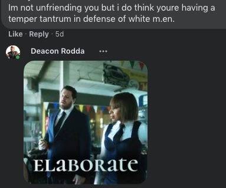

What Saddens Me Most …
It isn't the police violence.
Thanks to time with Chogyam Trungpa, Byron Katie, and the Epistle of St. James, I have come to a place of clarity about where my suffering begins and ends (I'm not name dropping; I'm bread crumbing. Dig into that reading list and get free, for real.). The police and other individuals who abuse positions of power are not a part of my community. I have no tether to the moral value of their choices. The abuses of authority which hurt us so much can only invite us into their hell. Pain is inevitable. Death is inevitable. Suffering and hate are voluntary, and I don't.
It isn't the global pandemic.
Disease is the most intimate companion of our hubris. Disease is not malicious. Infections are consistent and honest. Even those who deny that there is a disease to contend with are only reacting honestly to all of the betrayals they've experienced from authorities and education. I'm not angry or particularly disappointed in those who either think the sky is falling because someone isn't in a mask or because others are. Every part of it is natural. There's no malice in it, not inherently.
It isn't even the forest fires.
And, I am a pretty serious dendrophile. But, the forests can hold their own. Burn every stick to ash. They'll pop back up when we're gone; it's just a blink to them.
What really makes me sorrowful, what makes me feel like giving up and walking away, is how I see people that I've respected and want so badly to continue to respect speaking about and behaving toward those who are different than them.
Now more than ever, I see that my community is full of folks who accept sexism, accept racism, accept all sorts of hateful behavior and bigotry.
Once Trump had the republican nomination, four years ago, fascists started crawling out into the open. They were always there, but all of a sudden they had permission to make some noise. First, I noticed the fascists on the right. Then, as if emboldened by all of the fun they thought the Breitbart/Proud Boy crowd was having, the bigots on the left started getting a little more vocal and repugnant as well. And, I was very disappointed that several of them lived behind faces I thought I knew.
Everyday now, I see people that I thought had some sense making cruel sweeping generalizations about cis folks, or men, or white people, statements that — if made about any other group of people — would be the end of their social standing all together. There's nothing alright about it. It's hideous.
I'm disgusted every time I see someone make a scathing blanket statement about Christians, about straight people, and YES even about republicans. They have ideas that are different than yours, sure, but do you even know if their values are different? You're talking about people, real humans with real reasons for their ideas and positions — let alone people who just have a normative sexuality or gender expression.
If you think that a person having an idea that you don't agree with is justification to disparage their fundamental human dignity, their value, the legitimacy of their experience, or the sanctity of their life, than you've already taken the only difficult step toward putting that person in a gas chamber. Sound hyperbolic? Well, if you read your history closely it is the exact opposite. You see the reason the Third Reich used gas chambers is that this innovation allowed them to split up all of the responsibility for killing people into a hundred tiny jobs — enough so that they could actually get Jews to perform some of the grizzliest tasks to keep the machine running. They replaced the firing squad, and eliminated the dissonance.
The only big step toward totalitarian fascism is othering.
It's all easy baby steps from there.
And, I don't want to be vague here. If you think that a cis-white-hetero-man with a 401-K ought to be — in any way — forcibly silenced on general principle, you are a fucking nazi. If you think that J.K. Rowling ought to “suffer consequences” (actual statement made) for having the audacity to opin that ‘woman’ is a reasonable descriptor for people who menstruate, you are a fucking nazi.
This is super simple. Don't attack people for what they think; discuss the ideas themselves. More critically, don't move ideological conflict from discourse into a space of social leverage or other forms of use of force — ever (because that is both the meaning of fascism as well as the entire reason that it is wrong).
A person is not their circumstance or even their beliefs — which, at the end of the day, are also just circumstantial. A person is a human being. It doesn't matter if they don't believe in germs, think the earth is flat, and can't understand how a woman could be attracted to another woman. They are still an infinite and unfathomable universe of existence in their own right, and that is a thing which ought to be respected.
Oh, and I know I'll be un-friend-ed for this. I know that I'll get canceled and found to be problematic by many little expedient judges and juries. And, honestly, it does hurt. It doesn't hurt because I care so much about what random people think. It hurts because a lot of the people I'm talking about are people I've really cared about quite a lot. They are people I never would have let an idea estrange me from, people I would never have condemned for anything short of reprehensible behavior, people I have been ready to lay it all down for. But, it has become clear to me that to them I am just an arithmetical expression. I get points for being black, and triple black points for having been assaulted by cops because that's trending right now. But, I lose a lot of points for being straight, being male, being a gun owner … shit, I think I'm losing the game. And, I'm pretty sure that's all I am to the serious leftists I know, just the sum of my identity points and however much I can leverage them through double speak.
Well, I'm through. I'm calling bull shit. I'm done.
And, looking at how some of those bigoted, fascist assholes talk about others these days, seeing that they recommend silencing people, limiting human voices, getting rid of the people they find undesirable, it just hurts. That's it. I've got no hell to put anyone in. I'm not going to pretend to cancel anyone because that's ignorant nonsense. I just have to be real. I have to be honest because by not saying anything I'm enjoying a dishonest privilege that I could choose to keep because I know how to talk PC and I can pass for progressive. But, that's not living, and I can't serve anyone that way. And, that's what I want. I want to be of service. And, the best service I can see at this very moment is to openly say that some people I have real love for have some terrible issues to deal with, and I can't ignore it any longer.
I have to be honest in order to live in a place of peace with myself. And, honestly, It hurts to watch some of you talk.
cheers,
Deacon Rodda
If you made it this far and you don't want me canceled, maybe there's a chance that you want to help me on my quest to create real solutions that empower communities of people who don't want to forcibly change others?
Well, if so, then won't you consider supporting me to the tune of $2/mo. on Patreon as I refine methods of social change and personal empowerment, which I prototype and publish for feedback and general social uplift.
L.W. responded
There are points I agree with/points I disagree with. Some of my disagreements, simplified and briefly: I think there's some oversimplification when people make arguments like saying dehumanizing things about any group is the first step toward X (plus, I'd argue it's classic slippery slope fallacy.) You have to take relative power (Actual power. Like the power to deploy federal police on protesters) and status as majority (or popularly perceived majority) into account. Plus, the length of time it's been OK to demonize a group (there were centuries of hatred & weird conspiracies about Jewish people before the Holocaust.) So I'd argue that if you want to make comparisons to explosively violent historical events, French Revolution might be more apt than Nazi Germany.
Honestly, I've been largely away from social media since moving, because I don't really want to spend MORE time reading and writing. But based on what you've written, I think you'd appreciate one of the readings my pedagogy class was assigned this week, if you can access JStor: (Jim W. Corder, Argument as Emergence, Rhetoric as Love.) I have agreements and disagreements with this text (some of which I find infuriating), too, but I think you might appreciate it.
(It actually made me think of you when I was reading it yesterday, before you even wrote this post!)
I will say the place I generally agree with you is there are some leftist trends toward orthodoxy, which I think promotes sloppy, lazy thinking (and sometimes, eventually, action.)
Deacon:
So, I’m actually saying something a little bolder than ‘this is the first step …’ or any slippery slope kind of thing. I'm actually saying that this is the critical step, the only one that matters. For most Germans in the mid–late ‘30s it was the only step. Since, fascism requires so little of most people, really just passive acceptance, there's no slope. If you can see people as Other, then you've arrived — no matter how many generations it took to get there.
For those who will be the ones committing heinous acts, othering is still the only critical step. In context, by ‘critical’ I mean that the step of othering is the only step that should incur cognitive dissonance — even though it's as easy as any coping mechanism. Once the people one opposes have less inherent worth and sanctity, everything else is just growth, strength building, and defending the interests of the community. We want to be growing the sovereignty of our communities. We want to be developing the strength of our institutions. If you combine strong communities with othering, what do you get? You get goose-stepping nazis is what you get.
One major issue that I see is that people frequently don't notice when they have institutional power. The radical left has barely realized the institutional power it has gained in the universities and still claims that it would need to have institutional power in order for it's flaws to be properly racist, sexist, etc. And, the generational hatred and weird conspiracy theories about the groups I mentioned — yeah those are there. How many awful stories float around about Christians, straightness, cis/heteronormative social groups, white people, or even the 1%? They've existed for generations. The pejorative way that people talk about ‘bosses’, ‘landlords’, and other people who are lumped into the ruling class is scary and the cultural acceptance of that othering in the U.S. dates back to at least the late 1800s.
We also need to separate fascism (the personal attribute, ideology, and behavioral patterns) from totalitarian fascist government. When Hitler was rabble-rousing in bars and practicing his oration for audiences of ten, he wasn't any less fascist. Fascism isn't a matter of scale or power; totalitarianism is. And, fascism, the social behavior and ideology, is the thing that we need to be mindful of in our communities, now and always. Because we need to be building our community sovereignty. Power building is what we need to do, so there's nothing there to keep in check.
Further, putting any moral onus on degree of power is one of the things that keeps communities weak. We resent the powerful, wether their power is money, fame, access, or institutionally based. People act as though those things have moral value because that's the convenient, easy way out. None of those things have moral value — morals do.
And, speaking of institutional power, I don't have the institutional cred to access to the article you linked.
D.H. responded:
This reminds me of this article I read recently.
There is an idea in here that the extreme right creates and is co created by their inverse on the left.
I often find myself disheartened when I'm among friends and they begin to belittle the imagined owner of that yellow snake flag, or talk shit about neighbors, or any of the other flavors of people with "wrong" aesthetics.
I find horror in myself when I fantasize about pushing one of those Karen's down a flight of stairs or seeing those billionaire masters of the universe hung.
I feel like an outsider or wrong when I suggest that our role is to show compassion for even the most heinous criminals, even the right wing shooters.
I am confused by the abolitionist who call for the locking up of people they believe evil.
Deacon:
That article is fucking brilliant.

no response.
NOTE: I'm not defending white men, or straight people, or any of the “victims” of bigotry. It's the other way around. Bigotry is suffering. The person who thinks ‘white men ________’, fill in the blank with any negative generalization you want, that person is the one who is suffering. I think we all know that white men don't just feel pain because people don't like them.
N.H. responded:
Hi Deacon Rodda, I love the prompt of “what’s saddens me the most...”, such a vulnerable invitation into your heart. I find myself super curious in wanting to get to know your world better and with each post/meeting I have with you I feel like I gain another little bit.
What I’m most curious in right now is how you name “othering” as the biggest step toward fascism and call people who practice it f***** nazis. The reason I’m curious is because I feel very similarly in terms of how my body responds when I see messages or practices of othering displayed in person or on social media. The only difference is that I often choose silence because I can never get past the mental hump of how can I name the othering without practicing othering myself. I’m searching for ways to do that more skillfully, will you reveal if that’s a consideration you have, how/if you consider your statements to be different than other othering. I have some ideas of how I think you hold that nuance, one of those is the way you skillfully and openly engage with responses/reactions.
Thanks for revealing more, thanks for your vulnerability. It allows for a deeper understanding of my self.
Deacon:
Aww, N————, thanks so much. That's a super rich response. I'ma dig deeper on it.
Yes, I do see a dramatic difference between what I've said and actual othering — though I would entirely accept that anyone could have any sort of experience with my rant because it is more of an emotional and expressive addition to the discourse than articles like the one which Drew added above. I believe we need both. And, as I'll explain, it is incredibly important to separate accusation from othering.
Othering, in the sense that I'm talking about, is ontological. To other someone is to make them — in your mind — something different than yourself, not a peer, not the same. And, the actions that follow this mental malice include those that one would believe to be wrong if applied to them or some other sort of valid person, like censorship, sanctioning, dispossession, and (as we've been seeing) sterilization. If you turn a person into an illegal you can sterilize them because their not the same thing as us — whoever ‘us’ is. That's a big obvious wrongdoing and sane people everywhere are condemning it. However, it isn't any structurally different than the thinking in red circles that separates workers from bosses and excuses crimes against the later, or even the thinking that leads to groups telling white people to step back and give their voices to BIPOC folk. The only differences are the scale and the medium of the power involved. But, the scale and medium of power are amoral, circumstantial factors, fungible variables. The actions are basically the same: we are of this type and get these rules, you are of that type and get different rules.
So, othering comes down to creating a different set of rules, or an asymmetry of standards, or a different set of presumed rights. It's possible that every contingent on the left has — at this point — accepted some degree of asymmetry as valid. And, in the beginning the asymmetry didn't directly come in the form of bigotry, oppression, or amount to fascism. Still, asymmetrical logic is categorically false and it is always a mistake to create different rules for people or anything which is ontologically the same in kind.
How did we come to start making these mistakes? How did we come to the point where we can't see the difference between healthy conflict and malicious divisiveness? Where it is simply easier to condemn whole segments of people than to think through issues, so we write people off and proliferate rules and identity based hierarchies? It's all a part of our abdication of personal and community sovereignty. Basically, being autonomous beings is hard. So, one by one we've been handing over different hard parts of life, making lots of little bad deals that make our lives easier.
When we began to feed the Leviathan, bolstering the state monopoly on violence, we also began to separate ourselves from conflict. Some conflict is adversarial, and society on the whole has definitely forgotten how that works — plug for the Yokai Gumi. Conflicts which are not adversarial, which are internal, are by nature a matter of refinement. They are a different sort of thing.
There are two things that people are not very comfortable with that keep us subservient to our current rulers: the inability to work with accusation, and the inability to work with criticism.
To criticize is to indicate what is flawed and what is not. To accuse is to assert moral wrong doing. Those are respectful things to do. What's more, those things should only be done with people you trust, respect, and care for. If you don't have trust, respect, and concern for someone then why bother? Further, if someone is your actual enemy, don't waste time communicating to them why they are your enemy — attack! We're doing it all wrong. We're looking at people who are not our friends and we're composing and presenting to them these big elaborate critiques. And, it's fine to develop a critique. But to then go to an enemy — who has no reason to care about our opinions — and present our review as though it means something, aaaaargh! We're only underscoring our lack of awareness of the nature of power and conflict. As long as we nurture this existential flaw to associate accusation and criticism with attack we will be stunted from developing sovereignty — even sovereignty within our own lives.
One more thing about accusation, criticism, and attack: Not one of those three actually wades into the territory of the fascist othering that I'm describing. Sure, fascism is an excellent method for indoctrinating soldiers to hate an enemy, but I don't believe that enemies ought to be hated. I can say have an enemy and believe that we are fundamentally the same, that the same basic rules apply to us, and that they have inherent worth. There is no point at which it is reasonable, necessary, or right to say that another person is less than or that they do not have the right to do as they see best. Really recognizing that all people have the right to act according to their beliefs really is the basis of all respectful conflict — whether it is internal or between enemies. There can always be respect. There can even be love and appreciation between soldiers killing each other on a field of battle or a tiger purring and snuggling a gazelle as it bleeds out (look it up, they actually do that). There are no others.
Note: There are many other factors that keep individuals and communities from developing sovereignty, but these are two failures in that set. We lack the ability to work with accusation and criticism because we think of them both as synonymous with attack. People of sovereignty do not conflate the three — cannot, in fact, not if they are to survive and maintain sovereignty in any domain with competition. The simplest way of seeing how this harms us is by looking at how often predators manage to harm people by coating their attacks in sugar. We have this mistaken impression that malevolence is — by its nature — aggressive and direct. In point of fact, benevolence frequently is aggressive and direct while malevolence (in sophisticated predators) is most frequently the inverse. Anyone who has ever spoken with a paramedic during an emergency situation and a con artist applying their trade will have a sense for what I'm getting at. In order to build sovereign, autonomous lives and communities, we cannot allow our perceptions to be thrown when interacting with such fundamental realities.
Our failure to accurately perceive what is productive internal refinement (accusation and criticism) and what is needed to deal with enemies (actual attack and defense) dooms us to remain serfs.
cheers.